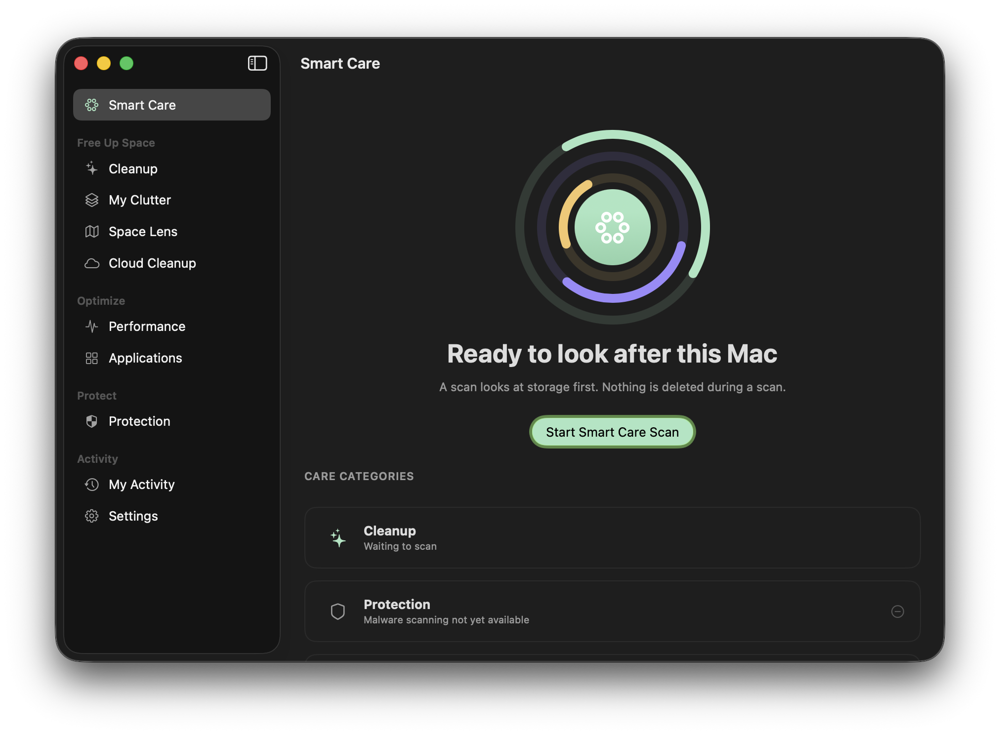
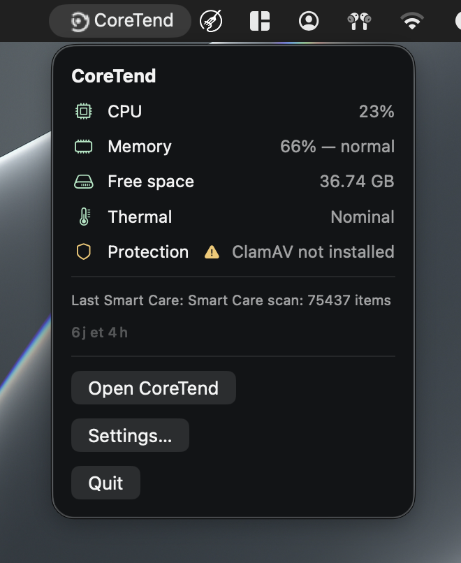

CoreTend
Finds what is filling up your Mac, and removes only what you approve.
Runs entirely on your Mac. No account, no telemetry, no network calls. Optional malware scanning uses ClamAV, installed and owned by you.
- Version
- 0.9.1-rc.2 · release candidate
- Requires
- macOS 14+ · Apple silicon
- Apple signature
- Unsigned, not notarized
- Licence
- Apache-2.0 · free
Pre-1.0, and unsigned
CoreTend is under active development and has not reached a stable 1.0. Builds are unsigned, so macOS will warn on first launch. The download page explains what that looks like and how to verify what you got.
The application
What you actually get


Verifiable
Every claim on this page has a link
Nothing here asks to be taken on trust. Each row states what is true, and links to the thing that proves it.
| Open source | Apache-2.0 — read the source |
|---|---|
| Builds and tests | every run is public |
| Build provenance | signed attestations — how to verify |
| Checksums | SHA-256 for every artifact |
| Publisher signature | Signed with key F8473FB09E1DB730 — verify |
| Apple signature | Unsigned and not notarized — what that means |
| Build it yourself | Documentation/BUILDING.md |
| Runs locally | No network client is linked into the app — verifiable by grep |
| Malware scanning | Optional, via the ClamAV binary you install yourself |
| Reporting a vulnerability | security policy |
Modules
What it actually does
Storage & care
Smart Care
One pass that runs every scan in order and shows you a single reviewable list. Nothing is removed until you say so.
Storage & care
Cleanup
Caches, logs, build leftovers, and installer remnants — each item grouped, sized, and explained before anything happens.
Storage & care
My Clutter
Large, old, and forgotten files, sorted so you can see what is actually taking the space before deciding anything.
Storage & care
Space Lens
A navigable map of your disk. Drill into any folder and see where the weight really sits, not just the top ten.
Privacy & protection
Privacy Cleaner
Browser traces per browser and per profile, listed individually. You choose what goes; a login you want kept stays.
Privacy & protection
Local protection with ClamAV
If you have ClamAV installed, CoreTend can run it and quarantine what it finds. ClamAV is optional, never bundled, and its database is never shipped here.
Activity & performance
Applications
What is installed, how large it is, and what each app leaves behind. Uninstall with its leftovers listed, not guessed at.
Activity & performance
Cloud Cleanup
Locally cached copies of cloud files, which can be re-downloaded. Nothing is uploaded and nothing is removed from the cloud itself.
Activity & performance
History and restore
Every action is recorded locally with what it touched. Items go to the Trash, so restoring is ordinary macOS.
Reclaimable space
A measured number, not a promise
CoreTend never shows an estimate it has not measured. After a scan you get the real byte count of what it found, grouped by where it came from, with the reason each item was flagged. Anything it cannot safely judge is left out of the total and labelled instead.
Demo
What the first launch looks like
CoreTend is unsigned, so macOS blocks the first launch. This is the real dialog, and the two-step way past it — recorded, not described.
How it behaves
Reversible by default
Dry run first, always
Every module runs as a preview by default. You see the full list, with sizes and reasons, before a single file moves.
The Trash, not deletion
Removals go to the macOS Trash. A mistake is a drag away from being undone, not a restore from backup.
No account, no telemetry
There is nothing to sign up for and nothing sent anywhere. No analytics, no crash reporting, no network call the app makes on its own.
Explained, then optional
Full Disk Access, notifications, ClamAV, and filesystem watching are each requested only when a feature needs them, and each can be declined.
First run
A setup assistant that explains, then asks
-
The first launch walks through how CoreTend works locally, what permissions each feature needs and why, which parts are optional, and what dry run means — then runs a short diagnostic and shows you a summary. Nothing is scanned or changed during setup.
- Explains what each permission is for before requesting it.
- Dry run is the default: findings are listed, nothing is removed.
- Nothing is scanned or changed while the assistant runs.
- Dry run by default
- Trash, not erase
- Explicit permissions
- No background agent
Open source
Readable, buildable, auditable
The full source is public under Apache-2.0. You can read what each rule matches, build the app yourself, and check the claims on this page against the code that makes them.
Questions
Straight answers
Does CoreTend send anything over the network?
No. The app makes no network call of its own. If you enable the optional ClamAV integration, ClamAV's own updater is a separate tool you run yourself.
Is this an antivirus?
No. CoreTend can run ClamAV if you have installed it, and quarantine what ClamAV reports. It is not a real-time antivirus and does not claim to be one.
How much space will it free?
That depends entirely on your Mac, and no honest answer can be given in advance. The app reports a real measured figure after scanning, before you approve anything.
Is the download signed and notarized?
Not yet. The builds are unsigned, which is why the download page explains exactly what macOS will say and how to verify the checksum yourself.
More in the full FAQ.
Get the current build
Apple Silicon, macOS 14 or later. Unsigned, so read the first-launch notes before installing.
Apache-2.0 for the code, CC-BY-4.0 for original documentation, third-party components under their own terms. The legal notice, privacy policy and security policy say what is and is not yet in place.